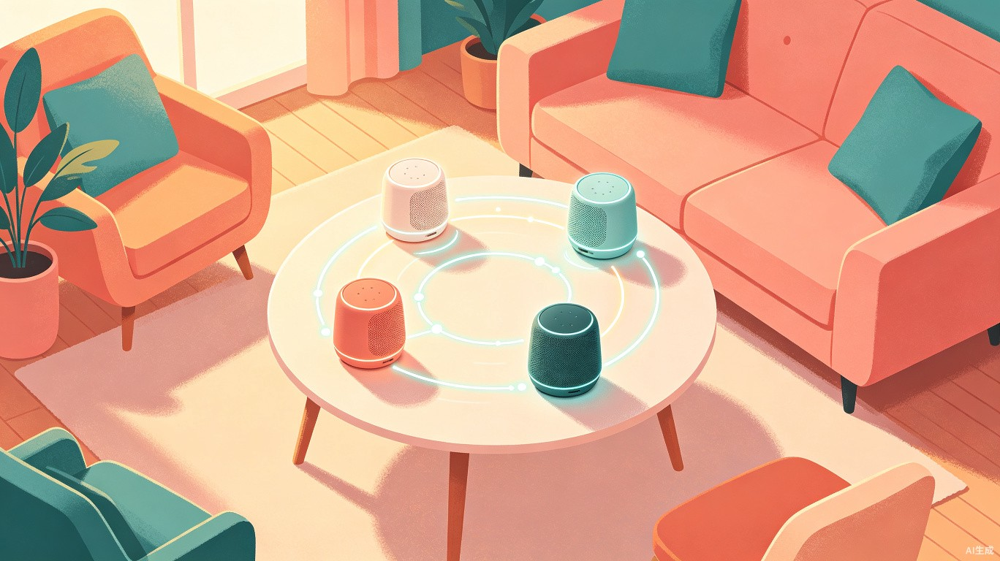
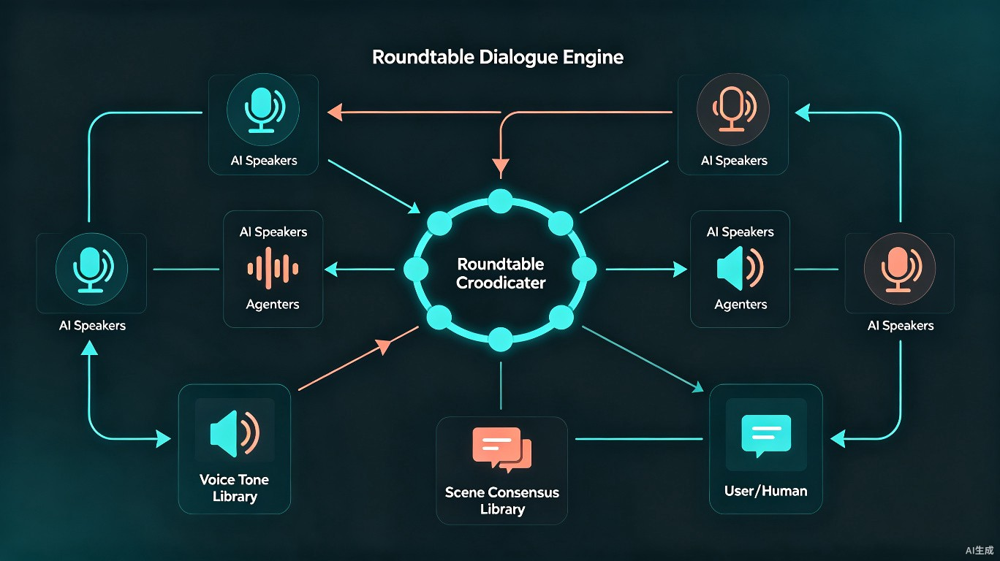

圆桌之声
意图驱动的多Agent圆桌对话引擎 — 部署于云端，以小智AI音箱为终端，让每台音箱都成为圆桌上有个性的「谈话伙伴」 。

为什么需要「圆桌之声」？
家里有多台智能音箱的用户，常常面临一个尴尬的现实：唤醒混乱、回复无序、彼此抢话、千人一面。更关键的是，现有音箱完全不具备意图感知能力——你无聊想有人陪聊时它只会一问一答，你想听个故事时它只会搜一段音频播放，你纠结不知道选什么时它只会给一个答案。音箱们各说各话，没有人听别人说了什么，也没有人判断你当下到底想要什么。
唤醒混乱
多个音箱同时响应同一唤醒词，用户无法指定由谁回答，体验混乱且低效。
回复无序
各音箱之间没有协调机制，同一话题被不同音箱重复回答或给出矛盾信息。
无法感知意图
用户想闲聊、想辩论、想听书、想求助，音箱永远只有一种"问答模式"，不会区分互动类型。
千人一面
所有音箱使用相同的默认音色和话术风格，无法区分"身份"，没有角色感和趣味性。
「圆桌之声」是什么？
云端引擎 + 小智AI音箱终端 + 意图驱动 + 圆桌协议
圆桌之声是一个部署在云服务器上的意图驱动型多Agent协作对话引擎。系统以多台小智AI音箱作为语音终端，通过WebSocket长连接与云端引擎实时通信。用户对任意一台小智音箱开口后，云端引擎首先通过意图识别判断用户是想闲聊、辩论、听书还是求助，然后自动切换互动模式，为每台音箱分配独立的AI Agent角色。多个Agent在云端完成倾听、思考、表达的认知闭环后，将语音分别推送到对应的小智音箱播放，形成有序的圆桌对话。
以前你面对的是"一堆各说各话的音箱"，现在你面对的是"一场云上圆桌会议，每个声音从不同的音箱传出"。每个Agent都具备完整的认知闭环：先聆听用户和其他Agent的发言，再结合自己的角色和知识进行思考，最后以自己的音色和风格表达观点。
五大核心模块
意图识别引擎（Intent Recognition Engine）
用户开口的第一句话，云端引擎实时分析其对话意图：是闲聊解闷、主题辩论、听书伴读，还是知识求助？识别结果决定整场互动的模式走向。例如"今天好无聊啊"触发闲聊模式，"你们觉得A好还是B好"触发辩论模式，"给我讲讲三体"触发听书模式。引擎还支持模式流转——对话中途用户改变意图（"算了不聊了，给我讲个故事吧"），系统会平滑切换模式，无需重新唤醒。
NLU Intent Classifier State Machine音色库（Voice Tone Library）
为每台小智音箱的Agent分配独特的语音身份。音色库预置多种声线类型（低沉男声、温柔女声、元气少年、沉稳长者等），通过云端TTS引擎合成语音后推送到对应音箱播放。每个Agent的音色与其角色设定绑定，确保从不同音箱传出时"听起来就像不同的人"。
Cloud TTS Voice Cloning VITS场景共识库（Scene Consensus Library）
维护当前对话的云端共享上下文。当用户开启一个话题（如"讨论今晚看什么电影"），场景共识库会建立一张"共识图谱"，记录所有Agent已表达的观点、已达成的共识和尚未解决的分歧。这确保每个Agent在发言前，都"知道别人说了什么"，避免重复和矛盾。
Shared Memory Knowledge Graph Redis圆桌对话协议（Roundtable Protocol）
定义Agent之间的发言调度规则，并根据意图识别结果自适应调整。协议包含：发言权获取（举手制/轮转制/主持人指定制）、发言时长限制、话题切换判定、沉默检测与主动发起等机制。不同模式下规则不同——闲聊模式宽松自由，辩论模式有正反方和计时，听书模式由"主讲Agent"串联、其他Agent插话点评。用户也可以手动指定模式，协议自动适配。
Multi-Agent Scheduler State Machine角色人格系统（Persona Engine）
每个Agent拥有独立的人格档案，包括：性格特征（理性/感性/幽默/严谨）、知识偏好（科技/文艺/生活/运动）、说话风格（简洁/详细/反问/感叹）和记忆回溯能力。用户可以预设角色，也可以让系统根据场景自动分配"最合适的讨论阵容"。
System Prompt RAG Persona Config云端 + 终端架构
圆桌之声采用云端-终端分离架构。对话引擎、LLM推理、意图识别、场景共识库等核心逻辑全部运行在云服务器上；多台小智AI音箱作为轻量级语音终端，通过WebSocket长连接与云端实时通信，负责语音采集（ASR）和语音播放（接收云端TTS音频流）。

语音采集（小智音箱端）
用户对任意一台小智音箱说话，音箱端完成ASR语音识别，将文本通过WebSocket长连接发送至云端引擎。唤醒词解析支持指定Agent或广播模式。
意图识别（云端）
云端引擎对用户输入进行实时意图分类：闲聊 / 辩论 / 听书 / 求助。识别结果驱动后续的模式选择和Agent阵容分配。支持对话中途的模式流转检测。
对话调度（云端核心）
调度器根据意图结果选择对应的圆桌协议规则（闲聊自由发言、辩论正反对阵、听书主讲+点评等），将用户发言写入云端场景共识库，通知各Agent进行"倾听→思考→表达"。
Agent 认知循环（云端）
每个Agent在云端读取共识库上下文，结合自身人格设定和当前模式角色，通过LLM生成回复。回复经"去重检测"和"相关性过滤"后写入共识库。
语音推送（云端→音箱）
Agent的文本回复经云端TTS引擎合成语音（匹配各Agent的专属音色），通过WebSocket将音频流分别推送到对应的小智音箱播放。不同音箱发出不同声音，形成"多人互动"效果。
实时反馈闭环
用户可随时插话、切换话题、改变意图。小智音箱持续采集语音上传，云端调度器实时检测意图变化并平滑切换模式，调整Agent阵容和发言队列，全流程无需重新唤醒。
意图驱动的四种互动模式
用户不需要手动选择模式，只需自然地开口说话，系统自动识别意图并切换。
| 意图模式 | 触发示例 | 系统行为 | 体验价值 |
|---|---|---|---|
| 闲聊模式 | "今天好无聊啊""最近有什么八卦" | 多Agent自由轮流闲聊，话题松散发散，气氛轻松。用户随时加入或旁听 | 消除孤独感，感受"有人在旁边聊天"的热闹氛围 |
| 辩论模式 | "你们觉得A好还是B好""讨论一下这件事" | Agent自动分为正反方，按辩论规则发言，有立论、驳论、总结环节 | 多视角碰撞，帮助用户全面权衡，做出更理性的决策 |
| 听书模式 | "给我讲讲三体""讲个故事吧" | 一位Agent担任主讲（沉稳长者音色）串联内容，其他Agent适时插话点评、提问、补充背景 | 沉浸式伴读体验，比单人朗读更有互动感和层次感 |
| 求助模式 | "怎么做红烧肉""帮我查一下明天天气" | 快速切换到高效问答，由最匹配的Agent直接回答，其他Agent不干扰 | 保留实用性，日常问题快速解决，不被"热闹"拖慢效率 |
| 模式流转 | "算了不聊了，给我讲个故事吧" | 意图引擎实时检测用户意图变化，平滑切换模式，调整Agent阵容和发言规则 | 一次对话内自由切换，无需重新唤醒，体验自然连贯 |
为什么这个创意值得做？
社会价值：对抗独处孤独
独居人群日益增多，圆桌之声通过意图识别自动匹配互动模式——闲聊时热闹、听书时沉浸、辩论时犀利，为不同情绪状态提供恰到好处的AI陪伴，显著缓解孤独感。
效率提升：多视角决策
单AI对话容易"确认偏误"——AI倾向于顺着用户说。圆桌之声的辩论模式让多个Agent天然形成"红蓝对抗"，帮助用户全面权衡；求助模式又保留高效问答，不被"热闹"拖慢。
技术探索：云端多Agent协作
本项目探索了云端多Agent协作与消费级智能硬件结合的落地路径。意图驱动调度、场景共识库、角色人格系统、云端-终端音频流推送等模块，都是对"AI Agent社会"这一前沿方向的工程化实践。
商业价值：生态扩展潜力
首期以小智AI音箱为终端验证产品模型，远期通过开放设备协议接入更多品牌音箱。当所有音箱都能"单聊"时，能"群聊"的产品将成为独特卖点，可扩展至智能家居、车载、会议等场景。
从一台到千万台
圆桌之声采用"先深后广"的策略，先在小智AI音箱上打磨核心体验，再逐步开放生态。
当前
小智AI音箱 + 云端引擎
基于小智AI音箱的开放API，实现云端对话引擎的完整闭环：意图识别、多Agent协作、音色分配、圆桌协议。验证2-5台小智音箱同时在线的圆桌对话体验，打磨闲聊、辩论、听书、求助四大模式。
计划中
开放设备接入协议
将音箱通信层抽象为标准化的设备接入协议（基于WebSocket + JSON消息格式），定义统一的语音输入/输出、设备状态上报、音色能力声明等接口。任何支持该协议的智能音箱均可接入圆桌之声引擎，无需修改云端核心逻辑。
远景
多品牌生态 + 场景拓展
接入小爱、天猫精灵、HomePod等第三方音箱品牌，形成跨品牌圆桌。同时拓展至智能家居联动（Agent讨论后控制设备）、车载场景（车内多音箱讨论）、企业会议（Agent作为会议参与者辅助讨论）等B端场景。
让每一台智能音箱，都成为一个朋友
圆桌之声 — 不再是"你问它答"，而是"大家坐下来，好好聊一聊"。